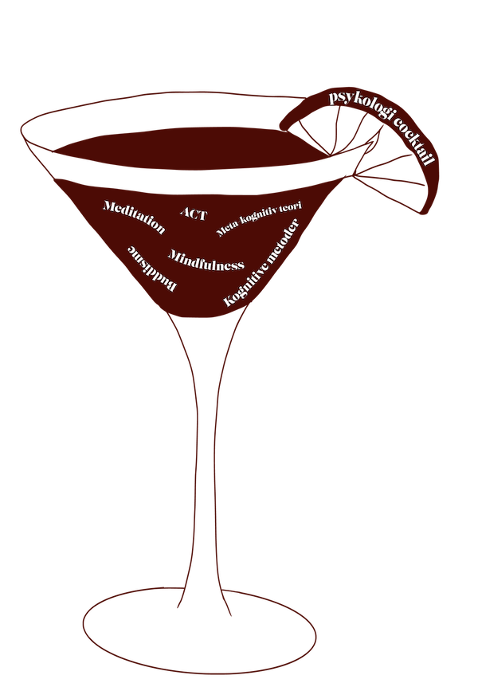

Terapiformer - et interview med Psykolog Nina Hestbech
Meditation. Det er blot en af de mange metoder som Psykolog Nina Hestbech bruger i sin praksis og som har hjulpet en masse af hendes klienter igennem årene.
Kognitive metoder
Men lad os starte fra en ende af. Fordi for mange psykologer er redskabskassen nemlig fyldt med værktøjer fra de kognitive teorier. Man arbejder i kognitiv terapi med at prøve at give noget perspektiv til diverse situationer som klienten nu måtte stå i og som kan være svært selv at få øje på, når man står i stormens midtpunkt.
Kognitiv terapi i praksis, kan være at give den her forståelse af at bare fordi man tænker noget, så er det ikke nødvendigvis rigtigt. Det kan faktisk være rigtig hjælpsomt at finde ud af.
Derudover er det lidt af et paraply begreb og “kognitiv terapi” dækker ofte over en hel masse, hvilket også er grunden til at mange bruger det. Men et af hovedmålene med de kognitive metoder, ligesom med bl.a. de meta-kognitive metoder, er at skabe en lille distance til tankerne. Det kunne f eks være at lære forskellen på at være bange for at noget er rigtigt og at noget rent faktisk er rigtigt.
“Der bliver en sprække til at kunne se andre muligheder”
Forskellen på det kognitive og det meta-kognitive, det er at i det kognitive har man prøvet at ændre på tankerne man har om noget, hvor man i det meta-kognitive prøver at ændre på forholdet til tankerne, så man går ikke så meget ind i hvad de der tanker handler om og om hvor vidt det er rigtigt hvad tankerne fortæller en. Man prøver bare at lade være med at tage de her tanker ind og tage dem så alvorligt.
ACT (acceptance and commitment therapy)
Men ligesom mange andre psykologer, har Nina også ladet sig inspirere af nogle af de nye teorier og metoder i psykologverdenen, fra både ind- og udland. En af de helt populære terapiformer, er ACT, som står for acceptance and commitment therapy. Det mange af de nye og moderne metoder har til fælles er at de, i modsætning til de ældre metoder, som eksempelvis Freuds psykoanalyse, er at de ikke går så meget i dybden med barndom og fortid, men mere fokuserer på nu og her, fordi nærvær og tilstedeværelse, ifølge mange, er en notorisk mangelvare i det moderne vestlige samfund.
Det er jo også en af de ting der er med i ACT, det her med accept, som jeg synes er rigtigt vigtigt, i stedet for “jeg vil ikke have det her ved mig selv”, så at sige ”jamen, måske er det egentligt fint nok at være den jeg er.” Det er det her med normalisering, som er noget af det jeg synes virker bedst, for rigtig mange, det er at finde ud af at der ikke er noget galt med os og at vi egentlig er helt normale.
Meditation og mindfulness
Og de meditative aktiviteter kan netop være hjælpsomme, fordi det der ofte giver tilstande af stress, angst og depression, er at vi bliver så påvirket af de negative tanker vi oplever om ikke at være gode nok eller om hvad der kan gå galt. Det foregår hele tiden i fremtiden eller i fortiden, så hvis man er mere til stede i nuet i sin hverdag, er der mindre tid at bruge på at være ængstelig og stresset. Sådan lyder i hvert fald nogle af tankerne bag denne bølge af meditation- og yoga dyrkende, som er stadigt voksende.
I praksis, kan det være at jeg laver en meditation med dem i samtalen og de så optager den på deres telefon, så de kan gå hjem og bruge den derhjemme. Det er bl.a. i forhold til stress, for at forstå hvad det vil sige at være tilstede og nærværende og hvordan man kan gribe fat i det når man står i angsten, fordi når man er nærværende kan man for det meste ikke have angst samtidig.
Træk vejret ind
Pust ud
Men i mit interview med Psykolog Nina Hestbech, blev det også hurtigt klart for os begge at meditation og yoga kan være enormt svært at komme i gang med og at mange endda oplever at det kan være “triggering” for dem at sætte sig ned uden distraheringer og være til stede med sine tanker.
Da jeg spurgte hvordan det kunne være at det var så svært, svarede Nina følgende:
Vi kan nemlig alle have tendser til at “numbe”, som man kalder det, når vi distraherer os selv, så vi ikke behøver at tage stilling til det ubehag vi kan blive mødt med når vi sætter os ned, uden stimuli til de fem sanser.
Emotional numbing
Emotional numbing eller bare numbing, er et engelsk udtryk som man i den danske psykologverden er begyndt at tage til sig.
Når man "number", bruger man mad, shopping, alkohol, stoffer, tv, sociale medier eller lignende til at distrahere sig selv fra tanker, traumer, følelser eller minder som er ubehagelige og som man gerne vil være fri for. Det ligger i vores natur at ville undgå det der er ubehageligt, men mange psykologer og sociologer mener at man ved at "tage det værste af smerten", også tager fra de gode følelser.
Kilde: https://thesummitwellnessgroup.com/blog/what-is-emotional-numbing/
Buddhisme
Men det vi ofte erfarer som mennesker, er jo at frygten for noget tit er værre end den faktiske situation. Og når man “bedøver” de negativer følelser, går det også ud over de positive emotioner, som kærlighed og glæde.
Når Nina interesserer sig for mødet mellem det buddistiske og psykologien, er det fordi hun synes at ideen om, uden at blive fanatisk selvfølgelig, at leve et mere bevidst liv er spændende. Når man i det kognitive dykker ned i de konkrete situationer, kan man nå til et punkt hvor det kan give mening at sætte tankemylderet på pause og i sin hverdag øve sig på at identificere sig mindre med alle de “labels” og analyser som vi kaster om os på daglig basis. At vidne vores tanker uden at blive opslugt af dem. Uden at de er os og vi er dem.
En god cocktail
Men formentlig vil en blanding af det kognitive og det meditative forblive en god kombination når man arbejder med mennesker. I sidste ende er vi dog en blanding af det menneskelige, der går op i hvad andre tænker og mener om os, og det spirituelle, som til tider formår at se udover vores eget ego og vejrtrække os igennem de svære situationer. Og det er nok også bare sådan at det skal være. Derfor fastholder Nina sin nuværende psykologiske værktøjskasse, trods hun stadig udvider den og er åben i sin tilgang til psyken. Hun mener at det er positivt at der kommer mere og mere fokus på mentalt helbred og tror på at fremtidens psykologi vil have et større fokus på fællesskab, eftersom vi jo er en social art, trods alt. Men resten må tiden vise.
